第 1 页 · 4 课堂实践
4 课堂实践

模块5：浅尝生成式人工智能

第 2 页 · 幻灯片
（本页无可提取文字，含图形/图片内容）
第 3 页 · 认识豆包文生图
认识豆包文生图
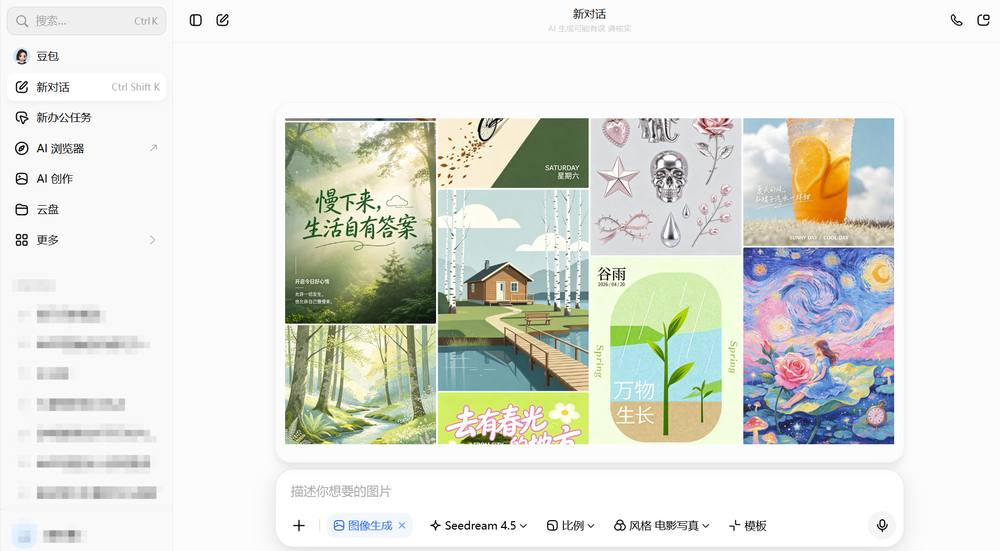
第 4 页 · 任务1：设计中国高铁系列宣传图
任务1：设计中国高铁系列宣传图
1.实践任务描述
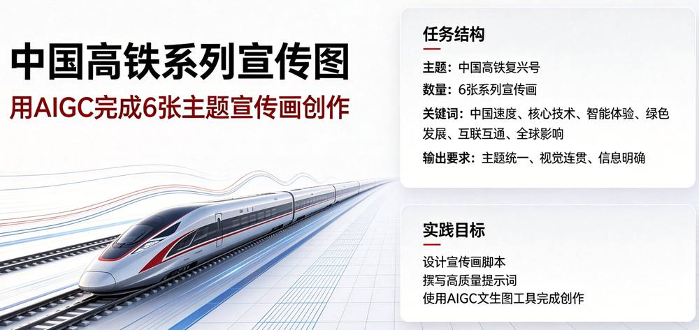
第 5 页 · 任务1：设计中国高铁系列宣传图
任务1：设计中国高铁系列宣传图
2.解决方案设计
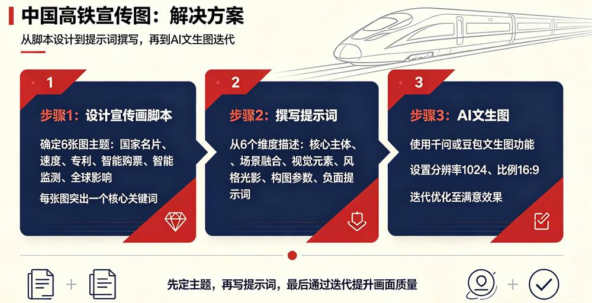
第 6 页 · 任务1：设计中国高铁系列宣传图
任务1：设计中国高铁系列宣传图
3.实践任务实施01：设计宣传画脚本
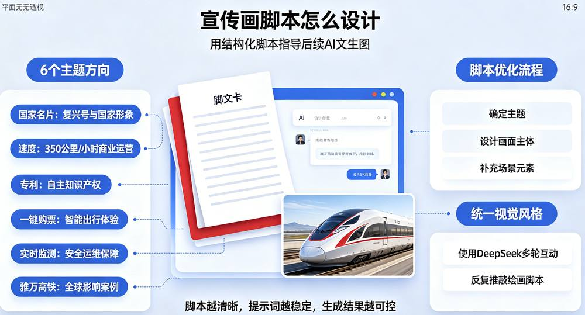
第 7 页 · 任务1：设计中国高铁系列宣传图
任务1：设计中国高铁系列宣传图
3.实践任务实施01：宣传画脚本
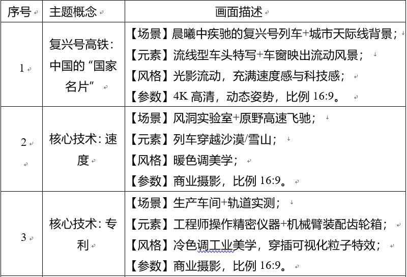
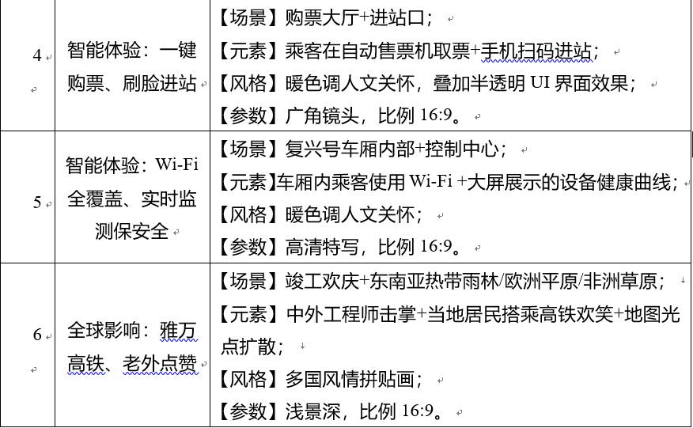
第 8 页 · 任务1：设计中国高铁系列宣传图
任务1：设计中国高铁系列宣传图
3.实践任务实施02：撰写提示词
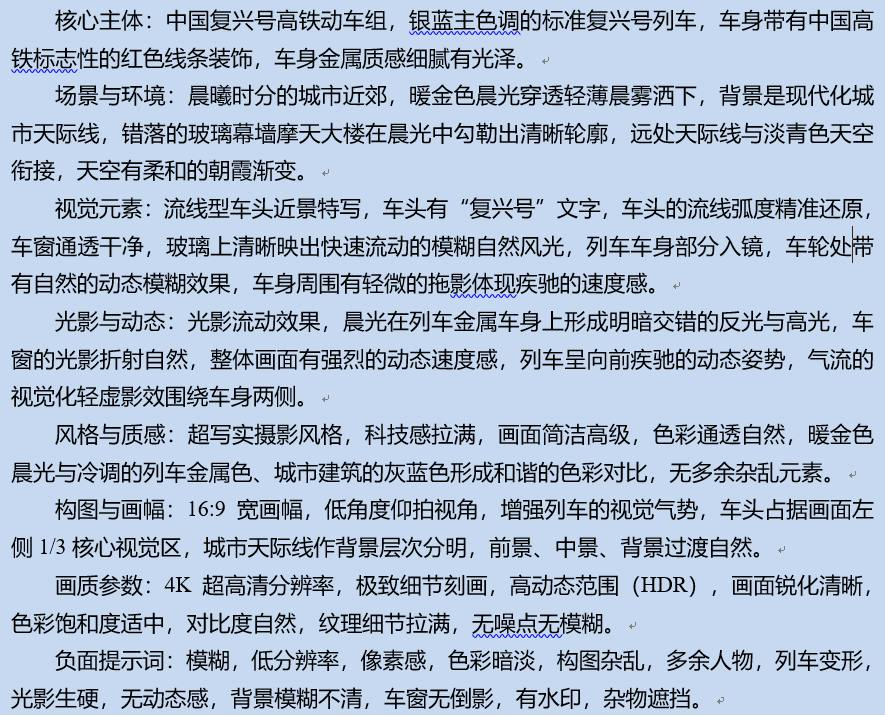
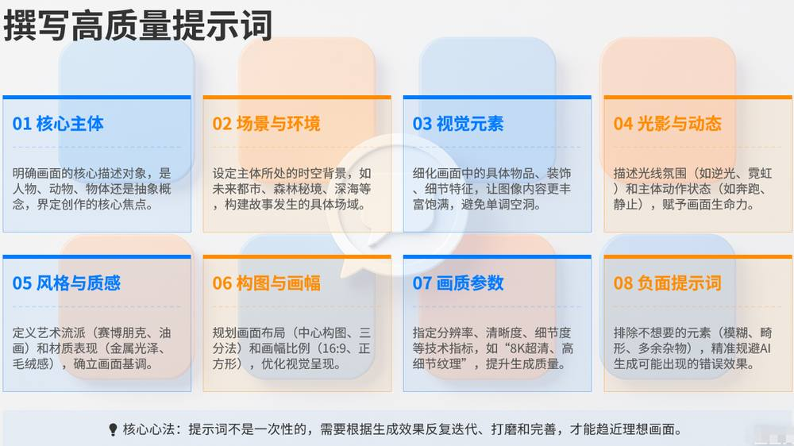
第 9 页 · 任务1：设计中国高铁系列宣传图
任务1：设计中国高铁系列宣传图
3.实践任务实施03：豆包文生图
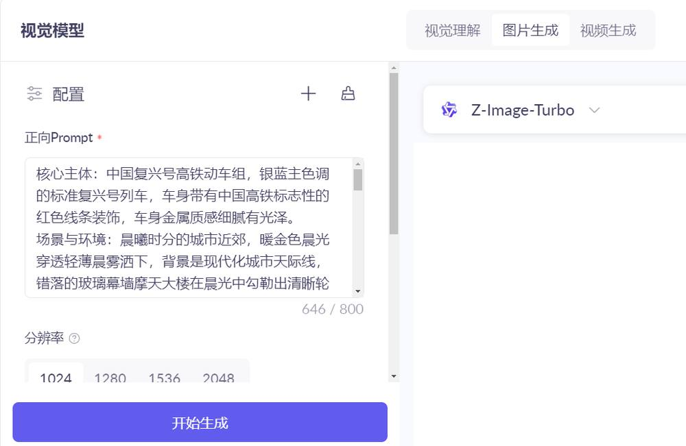
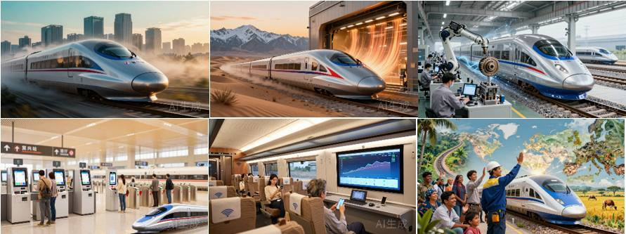
第 10 页 · 任务2：设计中国高铁宣传片
任务2：设计中国高铁宣传片
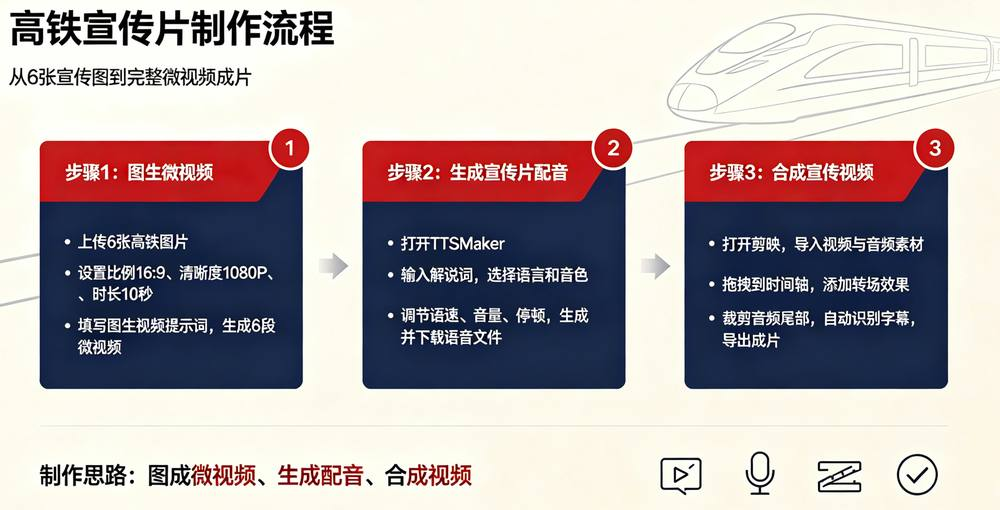
1.实践任务实施：解决方案设计
第 11 页 · 任务2：设计中国高铁宣传片
任务2：设计中国高铁宣传片
2.实践任务实施：图生视频（6段）
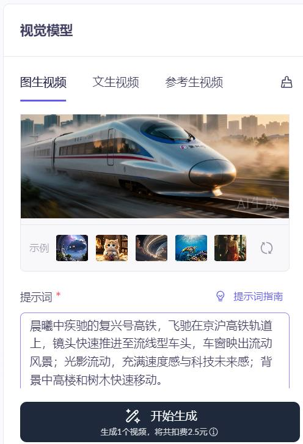
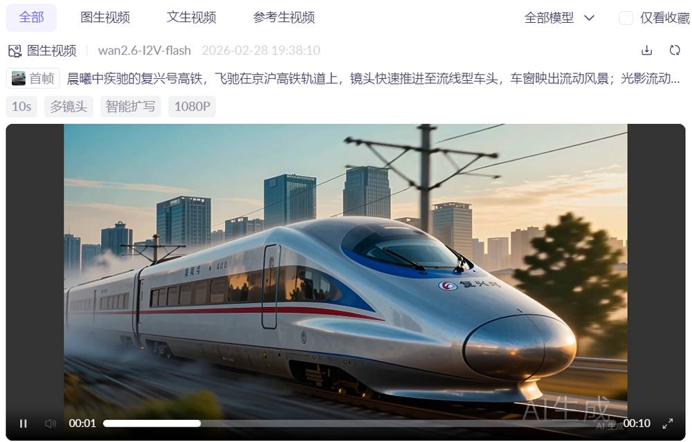
千问模型，选择“图生视频”
以第一张图为例
第 12 页 · 任务2：设计中国高铁宣传片
任务2：设计中国高铁宣传片
3.实践任务01：生成宣传片配音
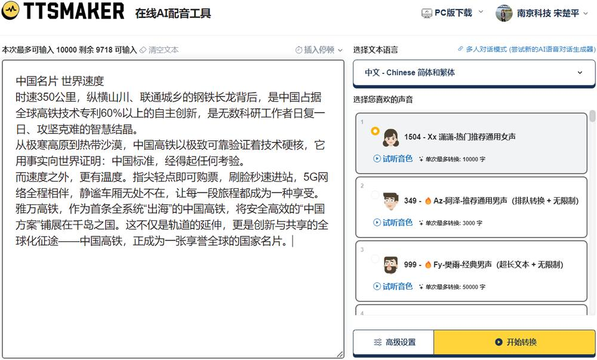
第 13 页 · 任务2：设计中国高铁宣传片
任务2：设计中国高铁宣传片
3.实践任务03：合成宣传视频
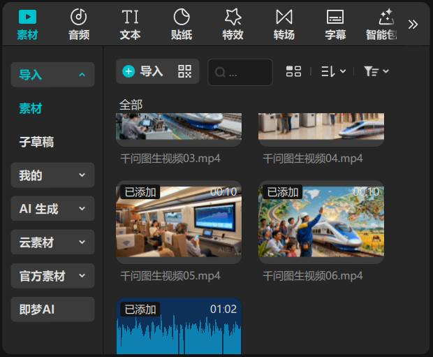
第 14 页 · 任务2：设计中国高铁宣传片
任务2：设计中国高铁宣传片
3.实践任务03：合成宣传视频
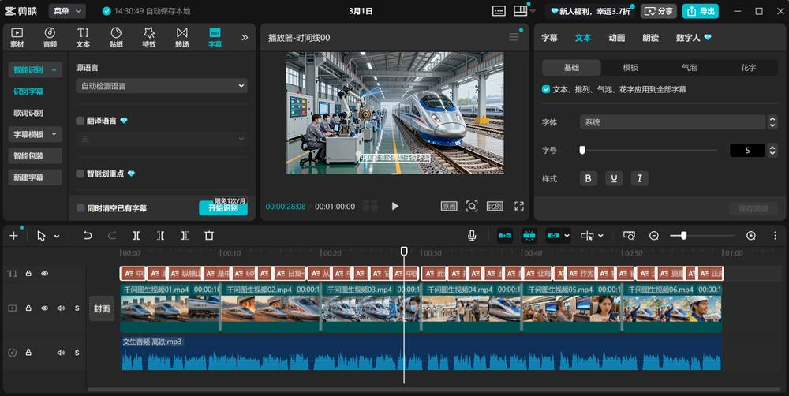
第 15 页 · 任务2：设计中国高铁宣传片
任务2：设计中国高铁宣传片
3.实践任务03：合成宣传视频
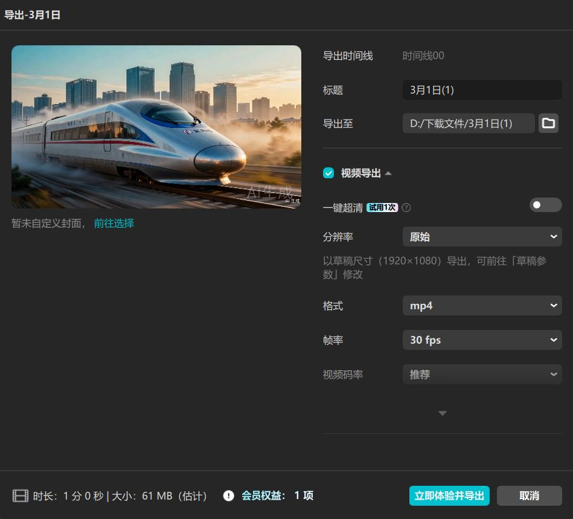
第 16 页 · 学生分享及教师点评
学生分享及教师点评

| 分享要点 | 分值 | 计分 | 评价标准 |
| 1、任务的方案设计合理性和可行性 | 20 | 基础数据齐全、人有想法 | |
| 2、文生图提示词撰写技巧 | 20 | 主动思考，探究背后技术 | |
| 3、AIGC工具选择原则 | 20 | 积极思考、善于总结创新 | |
| 4、图生视频合成策略 | 20 | 理性分析，人机协助 / 积极求变，另辟蹊径 | |
| 5、其它（含逻辑、表情、主动、清晰、流畅、新意等） | 20 | 能说、会思、质疑、精技 |
第 17 页 · 子任务3：语音提示处理
子任务3：语音提示处理

人机协同
善用智能